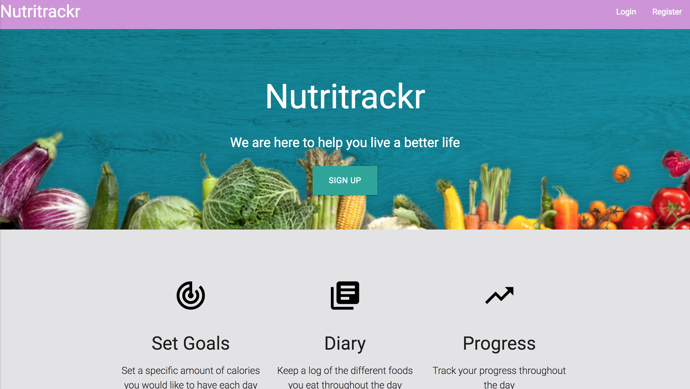

- Nutritrackr

- Work Example

- Work Example
I am a passionate, driven software engineer interested in everything from virtualization and building scalable web applications to real-time photorealistic graphics and intuitive UI/UX. I am always looking for ways to expand and hone my skills as an engineer. Being a natural problem solver, I research and implement solutions to complex software development problems and enthusiastically seek out new trends and innovative solutions in our industry.